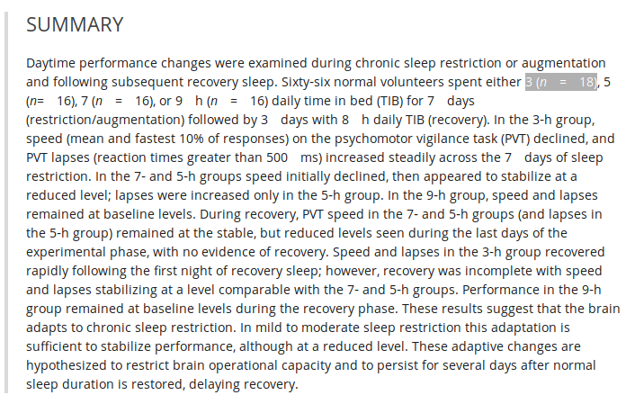

Dale Barr (University of Glasgow)
Mixed-effects workshop, July 20-21, 2022 (Reading)
Overview
- distinguish complete pooling, no pooling and partial pooling approaches to analysis for multi-level data
- understand the DGP behind multi-level data
- estimate multilevel models with
lme4::lmer()
Multilevel data
- All parametric models assume model residuals are IID (“independently and identically distributed”)
- Data often has ’clusters’ of correlated observations due to
- natural clustering
- multistage sampling
pros and cons of LMEMs
Pros
- powerful & expressive
- model continuous & categorical predictors
- handle unbalanced and missing data
- multiple random factors
- generalized LMMs
Cons
- complex
- estimated iteratively and may not converge!
Belenky et al. (2003)

Belenky et al. (2003)

Belenky et al. (2003)
TIB: time in bed
Psychomotor vigilance test

lme4::sleepstudy
library("lme4")
ggplot(sleepstudy, aes(Days, Reaction)) +
geom_point() +
geom_smooth(method = "lm", se = FALSE) +
scale_x_discrete(limits = 0:9) +
facet_wrap(~Subject)
- but: observations within subject not independent

Approaches to ML data
- complete pooling
- ignore dependencies in the data
- no pooling
- account for dependencies by fitting each subject independently
- partial pooling
- account for dependencies by explicitly modeling them
- fit for each subject informed by the fits for other subjects
multilevel app
GLM for sleepstudy
Level 1:
\(Y_{ij} = \beta_0 + \beta_1 X_{ij} + e_{ij} \)
Level 2:
\(\beta_0 = \gamma_{00} + S_{0i}\)
\(\beta_1 = \gamma_{10} + S_{1i}\)
Variance Components
\( \left< S_{0i}, S_{1i} \right> \sim N(\left< 0, 0 \right>, \mathbf{\Sigma})\)
\(\mathbf \Sigma = \left( \begin{array}{cc} {\tau_{00}}^2 & \rho\tau_{00}\tau_{11} \\ \rho\tau_{00}\tau_{11} & {\tau_{11}}^2 \\ \end{array} \right)\)
\(e_{ij} \sim N(0, \sigma^2)\)
Estimating
library("lme4")
mod <- lmer(Reaction ~ Days + (Days | Subject),
data = sleepstudy)
summary(mod)
Output
Linear mixed model fit by REML ['lmerMod']
Formula: Reaction ~ Days + (Days | Subject)
Data: sleepstudy
REML criterion at convergence: 1743.6
Scaled residuals:
Min 1Q Median 3Q Max
-3.9536 -0.4634 0.0231 0.4634 5.1793
Random effects:
Groups Name Variance Std.Dev. Corr
Subject (Intercept) 612.10 24.741
Days 35.07 5.922 0.07
Residual 654.94 25.592
Number of obs: 180, groups: Subject, 18
Fixed effects:
Estimate Std. Error t value
(Intercept) 251.405 6.825 36.838
Days 10.467 1.546 6.771
model syntax
dv ~ iv1 + iv2 + (iv1 | z)
## (1) random intercept
Reaction ~ Days + (1 | Subject)
## (2),(3) random slope model.
Reaction ~ Days + (1 + Days | Subject)
Reaction ~ Days + (Days | Subject)
## (4),(5) zero-covariances
Reaction ~ Days + (Days || Subject)
Reaction ~ Days + (1 | Subject) + (0 + Days | Subject)
p-values: model comparison
- NB: use REML=FALSE!
mod1 <- lmer(Reaction ~ Days + (Days | Subject),
sleepstudy, REML = FALSE)
mod2 <- lmer(Reaction ~ (Days | Subject),
sleepstudy, REML = FALSE)
anova(mod1, mod2)
Data: sleepstudy
Models:
mod2: Reaction ~ (Days | Subject)
mod1: Reaction ~ Days + (Days | Subject)
npar AIC BIC logLik deviance Chisq Df
mod2 5 1785.5 1801.4 -887.74 1775.5
mod1 6 1763.9 1783.1 -875.97 1751.9 23.537 1
Pr(>Chisq)
mod2
mod1 1.226e-06 ***
---
codes:
0 ‘***’ 0.001 ‘**’ 0.01 ‘*’ 0.05 ‘.’ 0.1 ‘ ’ 1
p-values: t-as-z
mod <- lmer(Reaction ~ Days + (Days | Subject), sleepstudy)
stderr <- sqrt(diag(vcov(mod)))
tvals <- fixef(mod) / stderr
2 * (1 - pnorm(abs(tvals)))
(Intercept) Days 0.000000e+00 1.274714e-11